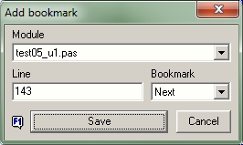
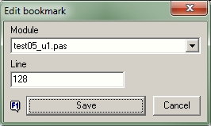

Editor BookmarksAdd and edit bookmarks |
|
If activated in the options, you may use the good old edit window, well known from the former version of the expert. This edit window will be opened when you click on the first toolbutton to add a new bookmark. Furthermore, an additional button will be visible in the toolbar, which can be used to edit bookmarks that have already been created.
 After opening the adding window, the preselection is set so that the next free bookmark is placed in the caret line of the active unit. If that is ok, the selection can be accepted with the Save button or pressing Return and the window will be closed immediately. You can change the default setting individually: ▪The preset selection can also be changed individually by selecting a specific bookmark number. If the selected number has already been used, the previous bookmark is deleted and the number is used for the new position. ▪Optionally, the preset line number can also be changed. In this way, bookmarks can be assigned to lines that are outside the visible area - how practical this option is, remains to be seen. ▪Any module can also be selected from the list of project files, but the bookmark only will be set in files that are already open in the IDE editor. This option is certainly only for users with a photographic memory who know exactly what they are doing even without eye contact - this approach is not recommended. ▪With the Cancel button or pressing Escape you may close the window without adding bookmark. ▪You can access help by pressing the F1 key or by clicking on the F1 symbol bottom left.
 Of course, the edit window can only be opened for bookmarks that already exist. Editing means being able to change the line number or module for the bookmark. Changes are accepted with the Save button or pressing Return and the window will be closed immediately. ▪By changing the line number you can assign the bookmark to every desired line number, even to lines that are outside the visible area - how practical this option is, remains to be seen. ▪Any module can also be selected from the list of project files, but the bookmark only will be set in files that are already open in the IDE editor. This option is certainly only for users with a photographic memory who know exactly what they are doing even without eye contact ... ▪You can delete existing bookmarks individually or in their entirety directly with the delete buttons of the main window toolbar. ▪With the Cancel button or pressing Escape you may close the window without adding bookmark. ▪You can access help by pressing the F1 key or by clicking on the F1 symbol bottom left.
|